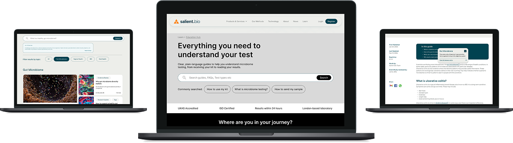
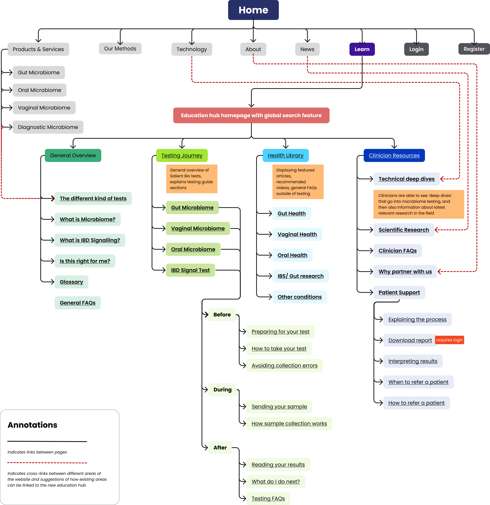
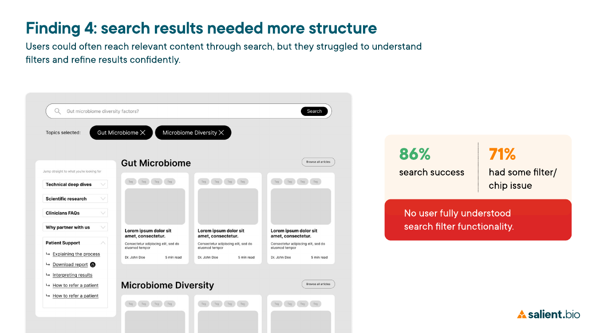
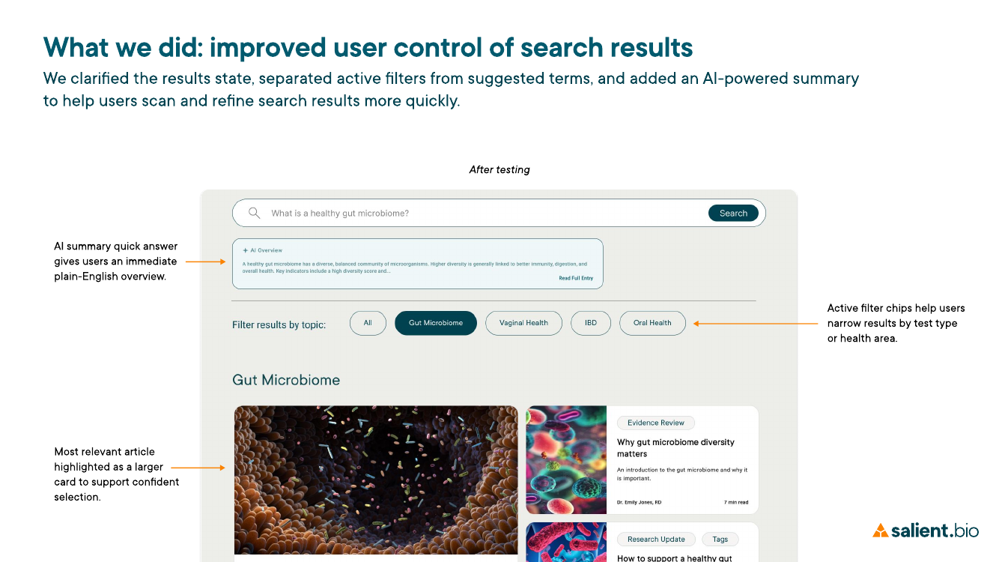
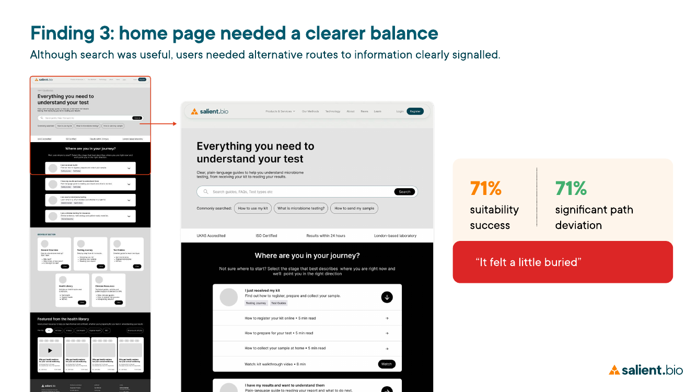
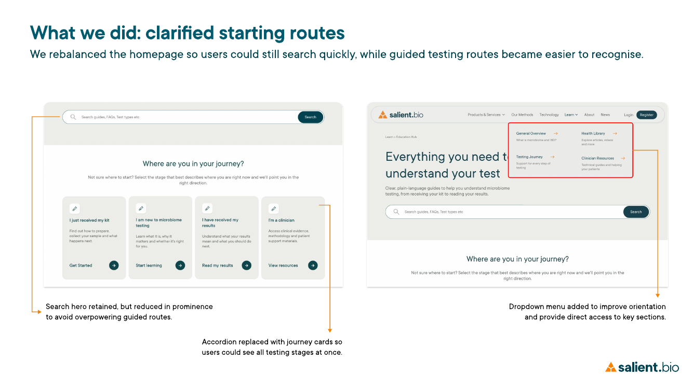
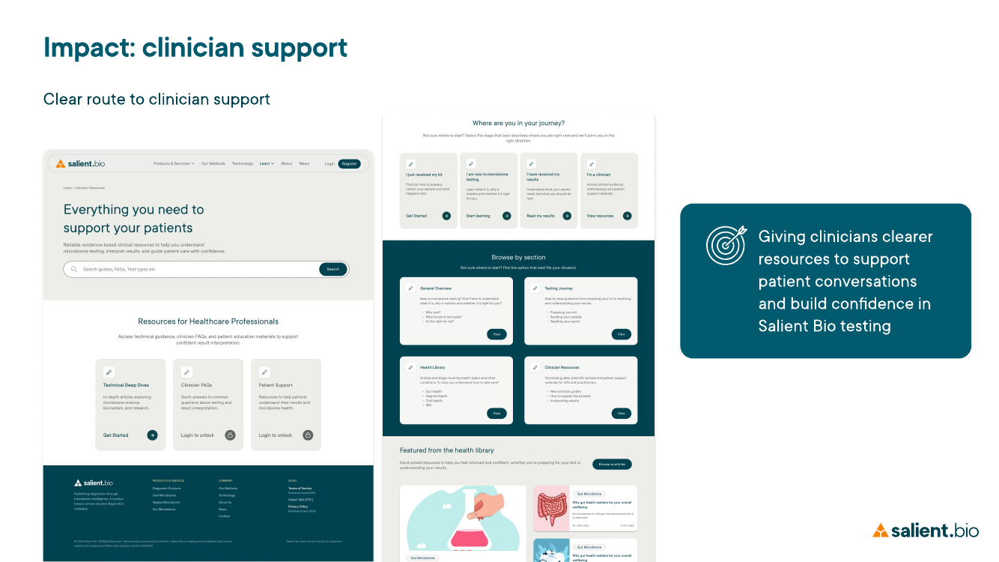
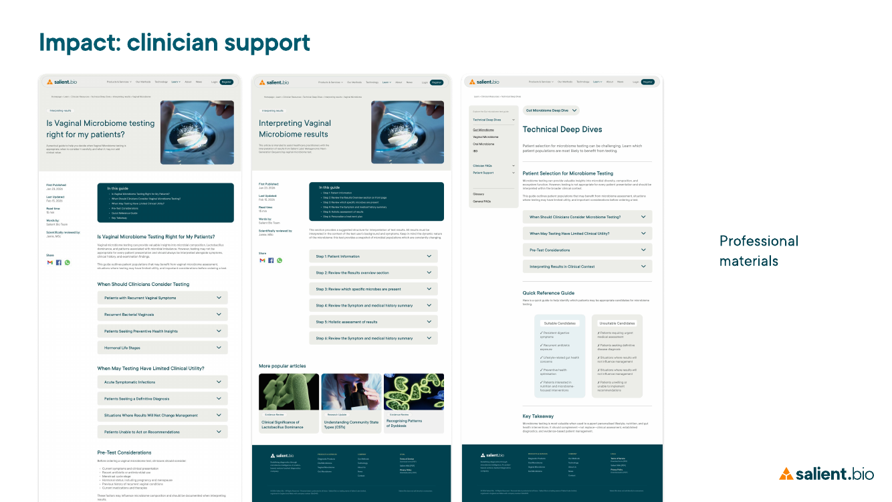
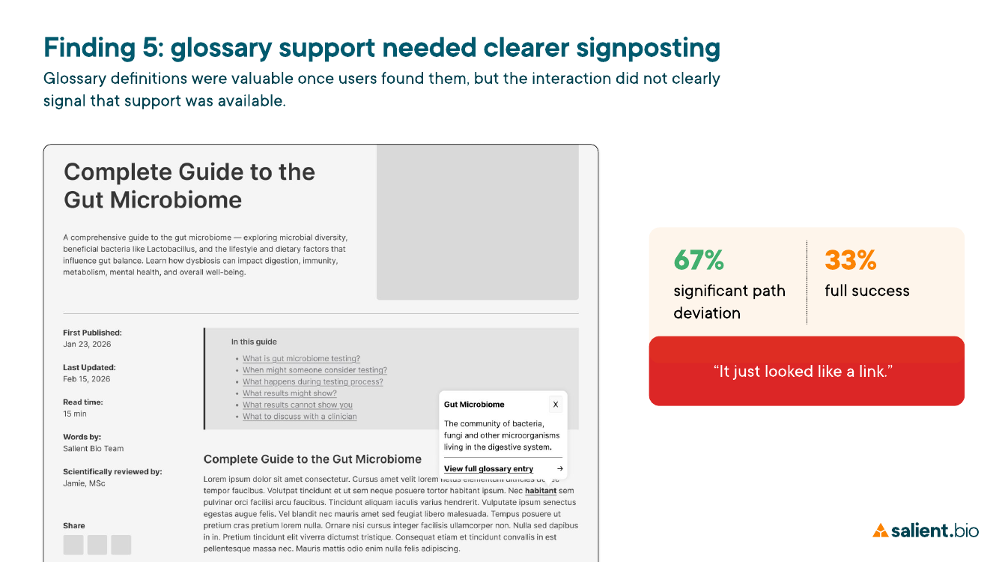
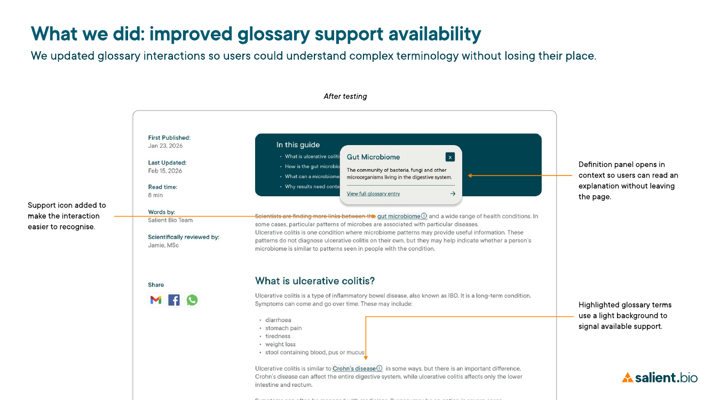

Salient Bio: a clearer Learn Hub for microbiome testing
Patients needed clear explanations of testing and its personal relevance. Clinicians needed evidence and detail to interpret results and support patients. We designed a Learn Hub organised around user intent and testing stage.
I led discovery research, mapped user flows and developed the information architecture and search approach. I contributed to prototyping and usability testing.
Apr 2026–May 2026 · End-to-end team project

I researched what patients and clinicians needed from the Learn Hub.
I interviewed two clinicians and one patient, alongside reviewing existing client research. Patients needed to judge whether testing was relevant to them and understand its implications. Clinicians needed evidence, methodology and resources to support discussions with patients.
- Patients
- Is testing relevant to me? What could it mean, and what happens next?
- Clinicians
- How does testing work? What evidence and resources support patient discussions?
See how the research informed the requirements
From research to requirements
Patient understanding
FindingPatients needed plain-language explanations of testing, its personal relevance and what to do next.
RequirementOrganise guidance around the testing journey, with clear explanations available in context and direct access to specific answers.
Clinician assessment
FindingClinicians needed evidence, methodology, limitations and material for supporting patient discussions.
RequirementBring professional information into a distinct clinician route, with enough depth to assess the service and interpret results.
These requirements informed the concept. Usability testing then examined whether people could recognise the routes and find the information they needed.
I organised the information around testing stages and professional needs.
I mapped patient journeys from considering a test to understanding results and next steps. Alongside those journeys, I developed a distinct clinician route, bringing professional information together within the same hub.
Learn Hub
Patient journeys
- Considering a test
- Taking a test
- Results and next steps
Clinician resources
Evidence, methodology and patient-support materials
Search and direct access across the hub
Explore the journeys and information architecture
Choose a route to highlight its place in the shared structure.
Guided patient journeys, clinician resources and search provide different routes through the same Learn Hub.
Learn Hub
A shared structure: general overview, testing journey, health library and clinician resources.
Guided patient journeys
Routes shaped around the testing stage.
- Considering testing: relevance and suitability
- Taking a test: preparation, process and support
- Understanding results: meaning and next steps
A professional route
Information with the depth clinicians need.
- Assess credibility, methods and suitability
- Find evidence and interpret results
- Access resources for supporting patients
Search and direct access
Reach specific information across the hub without following every stage of a guided journey.
How I organised the content
I grouped the architecture into General Overview, Testing Journey, Health Library and Clinician Resources. Within the testing content, I consolidated overlapping information around user needs and stages, while keeping search and direct access available across the hub.
The team translated that structure into guided navigation, searchable resources and patient and clinician content views.
From access routes to a content structure


Supporting diagrams
The journey diagrams explain the access model. The detailed architecture image shows the working content structure.
Guided journeys and search served different starting points.
Someone exploring whether to take a test needed guidance. Someone looking for a specific answer needed direct access. I developed the search and retrieval approach alongside the navigation, so the concept could support both ways of finding information.
Search concept


See the search and retrieval approach
Search alongside navigation
Search provided access across General Overview, Testing Journey, Health Library and Clinician Resources, without requiring someone to follow a complete testing journey.
I developed the retrieval approach and identified ambiguity in how the results view communicated what was active, suggested or most relevant. The team’s design response addressed three parts of the search experience.
Recognising the search state
- Active filters
- We separated applied filters from suggested terms, aiming to make the current search state easier to recognise.
- Suggested terms
- Possible refinements needed to be distinguishable from filters already in use, so people could tell what they might select next.
Earlier controls
Revised controls · not retested


Giving the leading result more emphasis
- Result priority
- We gave the most relevant article stronger visual priority, rather than presenting all results with equal emphasis.
The documented search views
The earlier view and revision show the changes to controls and result emphasis. The revised search experience was not retested. The AI summary shown in the revision slide was also an unvalidated proposal.
- View the earlier search view and testing finding (opens in a new tab)
- View the unvalidated search revision (opens in a new tab)
The next stage brings together the testing figures, my interpretation and the design comparisons.
Testing showed that finding an answer did not always mean the route was clear.
Participants took indirect paths and encountered difficulties with search controls and clinician resources. I simplified overlapping content in the architecture. We also made journey choices more visible, separated active filters from suggested terms and strengthened signposting to clinician resources. These revisions were not retested.
“It felt a little buried”

Earlier homepage

Unvalidated revision


See the findings and design revisions
- Entry points71%suitability success71%significant path deviation
- Search86%search success71%filter or chip issue
- Results + next steps100%success100%next-step clarity
The figures describe the tested tasks; task-level participant counts are unconfirmed in the available records. The updated homepage, search and information architecture were not retested within the project timeframe.
How I designed the usability study
I designed scenario-based tasks around risks identified during discovery and defined success criteria before testing. I assessed usefulness, efficiency and satisfaction using task completion, first-click success, path deviation, comprehension and confidence.
One task, three ways to assess the experience
Defined success criteria before testing
- Useful
- Did users find information that helped them understand or decide?Task completion, comprehension, next-step clarity.
- Efficient
- Could users reach the right information without unnecessary friction?First-click success, path deviation, hesitation.
- Satisfying
- Did users feel confident and supported using what they found?Confidence, reassurance, perceived clarity.
Make testing stages easier to recognise
What testing showed
71% of users found the information they needed to assess whether testing was suitable, but 71% also showed significant path deviation getting there.
My interpretation
The homepage gave search too much prominence while the guided routes were less visible. Finding an answer did not necessarily mean the journey was clear.
What we changed
I consolidated overlapping testing content around user needs and stages. We reduced search prominence and replaced expandable journey navigation with visible cards.
Still to validate: whether the revised homepage and information architecture help people find the right route. They were not retested.
Before testing · expandable routes
Revision · visible journey cards
Separate active filters from suggested terms
What testing showed
86% of users completed the search task successfully, but 71% encountered an issue with filters or chips.
My interpretation
I identified ambiguity in the retrieval model: people could reach relevant content, but the results view did not make clear what was active, suggested or most relevant.
What we changed
We separated active filters from suggested terms and gave the most relevant article stronger visual priority.
Still to validate: whether these changes make the search controls clearer. The revised search experience was not retested.
The proposed plain-English AI summary remained an unvalidated hypothesis. It needed clinical and content guardrails and further usability testing before any benefit to understanding could be established.
Before testing · unclear result controls
Revision · clearer results state
Clinician route and contextual support
Testing showed that professional users were not recognising where clinician-specific support lived. Only 33% achieved partial success, while 67% showed high path deviation; no participant found the clinician route without some uncertainty.
Discovery had identified clinicians’ need for evidence, methodology, suitability information and patient-support resources. I brought those requirements together in the architecture. We then grouped professional content under a more visible Clinician Resources route.




Supporting finding
Terminology without losing context
The same principle applied at a smaller scale to scientific terminology. Glossary definitions were useful once found, but only 33% fully completed the task and 67% showed significant path deviation.
We added clearer signposting to glossary terms and refined the in-context definition panel, aiming to make explanations easier to find without losing the reading context.
Before testing · limited signposting

Revision · signposted definitions

We delivered a Learn Hub concept with clear questions for further testing.
The next tests would check whether patients could find suitability information, refine searches and understand results and next steps. Clinician tasks would assess access to evidence, methodology and patient-support materials. Those findings would guide further development for both groups.
Next tests for the concept
Patient tasks
- Find suitability information
- Refine a search
- Understand results and next steps
Clinician tasks
- Find supporting evidence
- Assess methodology
- Locate patient-support materials
Observe completion, route and understanding
Task completion · path deviation · time on task · comprehension
See the proposed validation tasks
Next validation
Test access with both user groups
I would track task completion, path deviation, time on task and comprehension, and check where people believe education ends and medical advice begins. Those findings would guide further development for both groups.
Reflection
Different routes, a shared structure
The project strengthened my view that information architecture needed to reflect people's stage, intent and level of knowledge, while keeping direct routes available.
For the company, uncertainty about suitability, credibility or next steps could weaken confidence and cause people to leave the journey. This commercial risk remains a hypothesis, rather than a measured outcome.